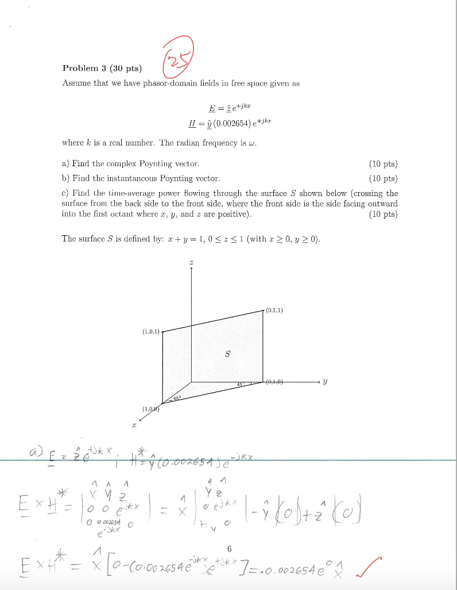
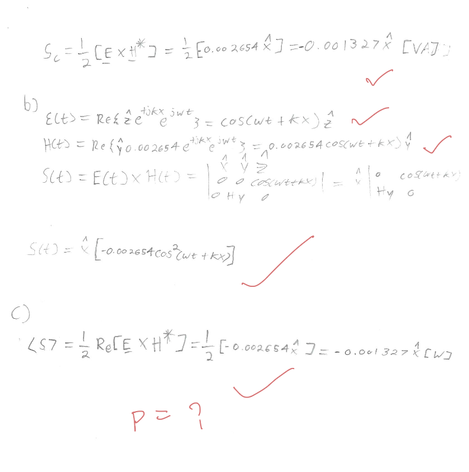

Three places AI is changing how I teach ECE at UH.
01
⚡
Concept Demos
Interactive HTML visualizations students can touch — built with AI in minutes, not weeks.
24 demos3 courses~30 min each
02
✓
AI Grading
Consistent, fast feedback on homework and exams — with a human in the loop.
71 students5× fasterper-criterion comments
03
📖
Custom Textbook
Slides + lecture notes → a textbook tailored to my class, not a generic one.
22 chaptersmy notationfree for students
Part 1 · Concept Demos
Interactive HTML built with AI — students touch the math, not just look at it.
01
⚡
Concept Demos
Interactive HTML visualizations students can touch — built with AI in minutes, not weeks.
24 demos3 courses~30 min each
02
✓
AI Grading
Consistent, fast feedback on homework and exams — with a human in the loop.
71 students5× fasterper-criterion comments
03
📖
Custom Textbook
Slides + lecture notes → a textbook tailored to my class.
22 chaptersmy notationfree for students
PART 1 — DEMOS
Why Demos? Some Concepts Won't Sit Still
Bounces, rotations, and oscillations are animations. Arrows on a printout can't capture them — and students can't ask "what if I change Z_L?" on paper.
"Tell me and I forget. Show me and I remember. Involve me and I understand."
AI-Assisted Demo Build Workflow
1 · DESCRIBE (PROMPT)"Make a demo to show how an EM wave propagates on a plane, show polarization, and let me change ε_r and frequency."
→
2 · GENERATEClaude writes HTML + Canvas + math in one pass
→
3 · ITERATE"Make the H-field 90° out of phase, fix the axis labels"
→
4 · DEPLOYOne file — open offline, or publish online via GitHub Pages
LIVE DEMO
Bounce Diagram — Transmission Line Reflections
Students see voltage waves bounce between source and load, with Γ_S and Γ_L shaping each round trip — the thing that's nearly impossible to visualize on a static x-t diagram.
LIVE DEMO
EM Wave Propagation
E and H fields, time-animated. The thing that takes 20 minutes to draw on a chalkboard.
LIVE DEMO
3-Phase Circuit — Y-Y, Y-Δ, Δ-Δ, Δ-Y
One of the hardest topics in ECE 3364. Students switch between the four configurations and watch line/phase voltages and currents rotate at 120° in real time — far more intuitive than static phasor diagrams on paper.
LIVE DEMO
K-Map Simplifier
Students try a minterm set, see the optimal grouping, and verify by hand.
Part 2 · AI Grading
Consistent rubric, specific feedback, same-day turnaround — and I stay in the loop.
01
⚡
Concept Demos
Interactive HTML visualizations students can touch.
24 demos3 courses~30 min each
02
✓
AI Grading
Consistent, fast feedback on homework and exams — with a human in the loop.
71 students5× fasterper-criterion comments
03
📖
Custom Textbook
Slides + lecture notes → a textbook tailored to my class.
22 chaptersmy notationfree for students
PART 2 — GRADING
AI-Assisted Grading Workflow
Upload exams + rubric → AI grades → I review the borderline cases → students get feedback the same day.
INPUTStudent PDF / handwritten scan
→
RUBRICMy grading criteria + worked solution
→
AI PASSPer-criterion score, comments, confidence
→
HUMANI review flagged / low-confidence items
→
RETURNPersonalized feedback to each student
Human stays in the loop — AI does the first pass, I do the judgment calls.
REAL DATA
AI vs Manual Grading — ECE 3317 Exam 1 (N = 71)
The numbers
63.6AI mean (σ 13.4)
77.2Manual mean (σ 10.9)
0.69Pearson r · R² = 0.48
90%cases where manual ≥ AI
Agreement bands
Within ±5 pts: 15% · ±10 pts: 39% · ±15 pts: 61%
Same letter grade: 11% · within 1 letter: 65%
Mean gap (Manual − AI): +13.7 pts
AI is systematically stricter — it ranks students well (r = 0.69) but applies the rubric without the partial-credit benefit-of-doubt I give. The orange curve y = 10·√x tracks the manual scores closely → manual grading effectively applies a square-root curve to the AI baseline.
Per-student scatter (each dot = one exam)
Most dots sit above the green diagonal → manual score > AI.
REAL DATA
Per-Student View — Every Exam, Sorted by AI Score
Each student is one pair of bars. Manual (purple) is taller than AI (blue) for almost everyone — the orange gap line is the partial-credit cushion the human grader applies.
Notice: only 7 of 71 students have AI ≥ Manual (their orange gap line slopes down) — the rest get the partial-credit cushion. → Use AI score + curve, not raw AI.
EXAMPLE
One Student, Problem 3 — Same Diagnosis, AI Slightly Stricter
Manual grade (handwritten)


Final score25 / 30
Red ✓ on (a) and (b). Red "P = ?" on (c) — instructor noted (c) is incomplete but didn't write why.
AI grade (per-criterion)
✓
P3a — Complex Poynting vector (10 / 10)Correct. S_c = ½ E × H* = −0.001327 x̂ [VA].
P3c — Time-avg power through surface S (3 / 10)Wrote ⟨S⟩ correctly but the surface integral over S is incomplete — never evaluated ∫∫_S ⟨S⟩·n̂ dA; final power not computed.
Final score23 / 30
AI deducted 2 more points on (c) — same diagnosis, less partial-credit benefit-of-doubt. Right in line with the +14-pt pattern from the scatter plot.
Manual 25 vs AI 23. Same root cause identified — but AI says why: "incomplete surface integral — evaluate ∫∫_S ⟨S⟩·n̂ dA," instead of just a red question mark.
Part 3 · Custom Textbook
Five textbooks in, one tailored book out — in my notation, matching my syllabus.
01
⚡
Concept Demos
Interactive HTML visualizations students can touch.
24 demos3 courses~30 min each
02
✓
AI Grading
Consistent, fast feedback with a human in the loop.
71 students5× fasterper-criterion comments
03
📖
Custom Textbook
Slides + lecture notes → a textbook tailored to my class, not a generic one.
22 chaptersmy notationfree for students
PART 3 — TEXTBOOK
Motivation
Why not just use a standard textbook?
2 required + 3 suggested textbooks for one course — students juggle five books
Expensive, and several are out of print — hard to buy, hard to find
Equations & notation vary from book to book — same concept, three different symbols
Course content is stitched together from different books — no single source matches the syllabus